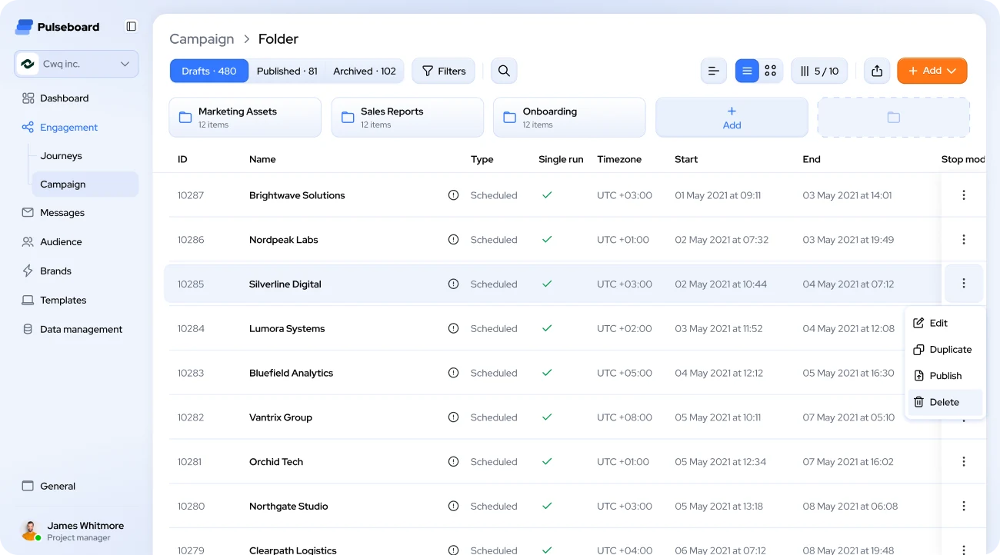
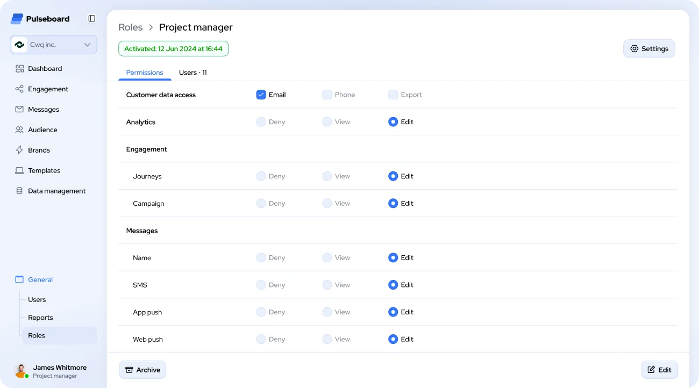
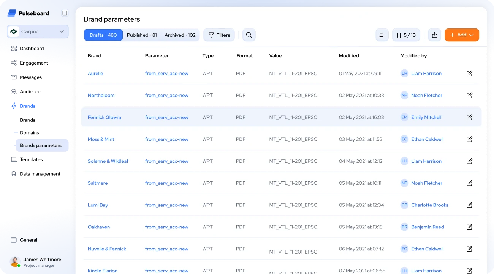
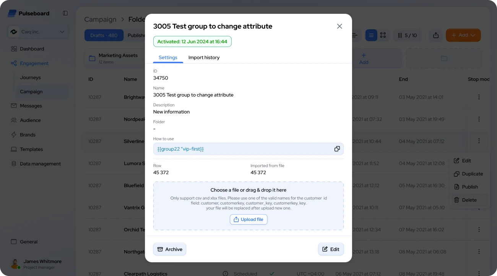

B2B web platform · Desktop · Design lead
Pulseboard
One workspace for every customer touchpoint. Redesigning a multi-brand marketing automation platform so teams can launch and manage hundreds of campaigns across brands.
- Product
- B2B web platform (desktop) for omnichannel campaigns: email, SMS, app & web push, across several brands
- Problem
- The product grew feature by feature: campaign lists were hard to scan, key actions hidden, brand settings scattered, and access changes went through developers. The cost: slow launches, support load, client complaints and lost deals
- My role
- Design lead of 3 designers. Scope: information architecture, UI, design system, dark theme
- Team
- Designers, PM, PO, engineers, QA
- What I delivered
- Redesigned campaign management, in-product roles & permissions, one structure for brand settings, and one component system for light and dark themes. Impact not measured

Context
Pulseboard is used by campaign managers, CRM specialists and project leads. They work with hundreds of campaigns, large customer datasets and strict access rules every day, across several brands.
Teams spent more time searching and double-checking than launching campaigns.
Screens of the previous version aren't available, so each decision below starts with the problem it solves.
Goals
- Make large campaign lists easy to scan, filter and act on
- Cut the steps for everyday actions: edit, duplicate, publish, archive
- Bring multi-brand configuration into one predictable structure
- Give admins clear, granular control over who can see and do what
- Build one component system that supports light and dark themes
My role
Design lead of 3 designers
Planned & distributed
the work across product areas
Ran design reviews
for the team's work
Kept quality & consistency
across product areas
I worked in a cross-functional team with a PM, a PO, engineers and QA.
Key decisions
Three areas, one goal: less searching, more launching
The team designed these areas under my lead; I distributed the work and ran the design reviews.
Decision 01
Campaigns: hundreds of rows, one clear view
Problem
Campaign lists were hard to scan and key actions were hidden.Trade-off
Row actions sit behind a menu rather than as visible buttons: one extra click in exchange for a calm, scannable table.Decision
Status tabs with live counters (Drafts, Published, Archived) show the state of work at a glance.
Folders pinned above the table let teams group campaigns by purpose, e.g. onboarding or sales reports.
Key parameters in columns (type, run mode, timezone, start and end dates), so users compare campaigns without opening them.
Row actions in a contextual menu (Edit, Duplicate, Publish, Delete), one click away. Delete is visually separated to prevent mistakes.
View controls grouped on the right (column settings, list/grid toggle, export) for power users.

Decision 02
Roles & permissions: access control moved into the product
Problem
Access control lived outside the interface: permission changes had to go through developers.Trade-off
A simple scale is less granular than full configuration. The most sensitive items get their own settings instead of making every module more complex.Decision
Grouped by product area (customer data, analytics, engagement, messages) and mirroring the main navigation, so admins see what each setting affects.
A simple access scale per module (Deny / View / Edit) replaces complex configuration.
Sensitive data is controlled separately: phone numbers and export have their own settings.
The Users tab shows who holds the role, which links permissions to real people.

Decision 03
Brands: one structure for many brands
Problem
Brand settings were scattered.Decision
All brand parameters in one table with a dedicated section in the navigation (Brands → Brand parameters, Domains).
Every change shows who made it and when, so teams can trace edits and stay accountable.
Brands, parameters and authors are linked, which keeps navigation between related entities fast.

Other improvements
Smaller decisions that keep the system consistent

Audience group details
Opens in a modal, so users keep their place in the list. A ready-to-copy variable lets marketers insert the group into messages without asking developers. Row counts help verify that an import went through correctly; drag-and-drop upload states the format rules.
Dark theme
Designed as a full mode, not an inverted copy: contrast, accents and states tuned separately for long working sessions.
Design system
Shared components (tables, tabs with counters, filters, context menus, modals, badges, form controls, navigation) and unified spacing, typography and color tokens. They make it possible to switch themes and add new modules without redesigning from scratch.
Outcome
What the redesign introduces
No metrics are available for this project. Below are the changes the redesign introduces, not measured results.
Campaign management on one screen
Statuses, folders, key parameters and row actions without opening each campaign.
Access control inside the product
Admins can set permissions themselves.
One structure for multi-brand setup
Brand parameters in a single table with change history.
One component system
For light and dark themes, built on shared tokens.
Expected impact (the reason for the work, not measured): faster campaign launches and fewer access-related requests to developers and support.
Reflection
Designing for data-heavy B2B products is about removing friction, not adding features.
The most important work was structural: clear hierarchy, predictable patterns and actions placed where users expect them.